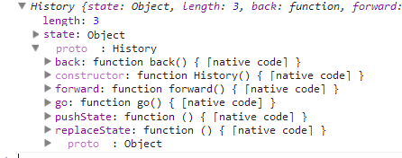

前言
在我们日常的网页浏览中，我们非常喜欢做一个操作：点击浏览器的前进后退
在Ajax技术出现后，有些时候前进后退就会给开发者带来困扰，甚至一些开发者试图去干掉History
随着Html5的发展，移动端的兴旺，单页应用出现了，于是History的处理被不得不提上议程了！
要知道，这一直是一项让人不愿意去碰的巨坑，但是单页应用却不得不去解决
首先History的处理逻辑看似简单，实则复杂，稍不注意就会出问题，我们这里来探讨下单页中History的处理规则
基础知识
javascript中History的历史对象包含用户已经浏览的URL信息，这就是我们传说中的历史记录
我们一般会用到forward/back两个方法与一个length接口，或者使用go具体到哪一层
后面一点，浏览器厂商发现History对象确实被管的过紧，于是又释放了两个关键接口，pushState以及replaceState，用于操作History对象

于是我们今天的一个重点便是这里的pushState以及replaceState，这两位同学可以向History中压入对象，并且在浏览器前进后退时会被触发
pushState
pushState会往History中写入一个对象，他造成的结果便是
① History length +1
② url 改变
③ 该索引History对应有一个State对象
这个时候若是点击浏览器的后退，便会触发popstate事件，将刚刚的存入数据对象读出，这里举一个简单例子


<html xmlns="http://www.w3.org/1999/xhtml"><head> <title></title> <style type="text/css"> div { margin: 10px; } .msgBtn { margin: 10px; padding: 10px; border: 1px solid black; } </style> <script id="others_zepto_10rc1" type="text/javascript" class="library" src="/js/sandbox/other/zepto.min.js"></script> </head> <body> <div id="msg"> 消息框</div> <br><br> <span class="msgBtn">去第一页</span> <span class="msgBtn">去第二页</span> <span class="msgBtn">去第三页</span> <script src="../../jquery-1.7.1.js" type="text/javascript"></script> <script type="text/javascript"> var _loc = location.href; function showMsg(el, msg) { el.html(msg); } window.addEventListener('popstate', function (e) { if (!e.state) return; showMsg($('#msg'), e.state); }); $('.msgBtn').click(function (e) { var msg = $(e.target).html(); showMsg($('#msg'), msg); history.pushState(msg, msg, _loc + '/' + msg); }); </script> <style></style> <script></script> <!-- Generated by RunJS (Wed May 07 18:05:27 CST 2014) 1ms --></body></html>
http://sandbox.runjs.cn/show/cspv3812
我们点击第一页时，往History中压入了数据，并且往里面写入了State对象（当前为msg），然后我们在浏览器后退时便会触发popstate事件
这个时候我们的URL已经发生改变，我们在事件点触发时便能进行操作了，我们这里的操作是改变msg的信息
所以这里我们得到的结果是
① pushState 会改变History
② 每次使用时候会为该索引的State加入我们自定义数据
③ 每次History的变化（forward、back、go）皆会导致popstate的触发，并且将对应索引的State搞出来
④ 每次我们会根据State的信息还原当前的view，于是用户点击后退便有了与浏览器后退前进一致的感受
现在我们有个问题，原来History我们什么都不能干，现在State可存储容量问题，因为State可存任何东西，很多用户就会开始乱搞，这个时候其容量是否有限制
<!DOCTYPE html PUBLIC "-//W3C//DTD XHTML 1.0 Transitional//EN" "http://www.w3.org/TR/xhtml1/DTD/xhtml1-transitional.dtd"> <html xmlns="http://www.w3.org/1999/xhtml"> <head> <title></title> <style type="text/css"> div { margin: 10px; } .msgBtn { margin: 10px; padding: 10px; border: 1px solid black; } </style> <script id="others_zepto_10rc1" type="text/javascript" class="library" src="/js/sandbox/other/zepto.min.js"></script> </head> <body> <div id="msg"> 消息框</div> <br /><br /> <ul id="list"></ul> <span class="msgBtn">去第一页</span> <span class="msgBtn">去第二页</span> <span class="msgBtn">去第三页</span> <script src="../../jquery-1.7.1.js" type="text/javascript"></script> <script type="text/javascript"> var _loc = location.href; var doc = document.body.innerHTML; var list = $('#list'); function showMsg(el, msg) { el.html(msg); } window.addEventListener('popstate', function (e) { if (!e.state) return; showMsg($('#msg'), e.state.msg); console.log(e.state.obj); }); for (var i = 0; i < 100; i++) { var li = $('<li class="msgBtn">' + '当前第' + i + '页' + '</li>'); list.append(li); } $('.msgBtn').on('click', function (e) { var msg = $(e.target).html(); showMsg($('#msg'), msg); doc = doc + msg; history.pushState({ msg: msg, obj: doc }, msg, _loc + '/' + msg); }); </script> </body> </html>
http://sandbox.runjs.cn/show/69oovy4b
这里存了一个较大字符串，并且搞了点击，看了下好像问题不大，于是不予关注了，基础知识也到此
PS：我们可以根据history.state获取当前的状态值，如果有的话
History与单页的坑们
在常规的网页中，首次进入一个网站，此时History length为1，不经过特殊处理的话，State为null
一次本标签链接操作length会加1
在单页中，基本思路也是如此，不同的是，我们一个个页面变成，一个页面上的一个个页面卡片
我们现在的页面跳转是
A->B->C->D
说白了这个只不过是页面上的4个dom对象来回的显示隐藏罢了
所以我们所有的规则期望的是与History逻辑保持一致，如此恼人的回退问题便可以还给浏览器，比如：
A-B-C
现在我们想从C回到B，这个时候有两个可能的动作，动作不同会造成不同的结果
一个是forward B；一个是back B
forward便会形成A-B-C-B的History队列结果
back的话仍然是A-B-C，而且当前处于B状态，浏览器前进可用
这个事实上与浏览器是保持一致的，比如我们由A进入B后，B页面有一个link标签链接到A
这时B返回A产生的结果便与上述类似了
比较恶心的事情往往与不按套路出牌有关，比如总有网站你一旦进去，点击浏览器后退就出不来了，同样的事情会发生在移动端
比如我现在直接由URL链接进列表页，那么此时我点击浏览器是不具备后退操作的，但是我们传统的单页应用头部都会有一个回退按钮
此时一刹那便2B了，因为我点击该回退按钮势必是可以回到index页面的，于是框架与浏览器的History便乱了
这个回退充满玄机，他是在History小于1的时候的处理逻辑，这里我们有些时候不会往History插入新值，于是
浏览器看来这个时候是 B，框架的路由却是B->A，于是我们点击A的搜索再次进入列表页（B），这个时候
框架：B->A->B
浏览器：B->B
这个时候我们优雅的点击了浏览器的回退，B页面发现自己的History大于1了，于是便执行浏览器的回退操作，结果全乱了
当然，一般情况下，我们不会像上面那样做，我们会在B->A的时候往History中插入数据，让他们保持一致性
框架：B->A->B
浏览器：B->A->B
情况往往没有那么乐观，更常见的情况是，以下场景
我们在订单填写页写完了订单，于是点击确认后便跳到了订单完成页，这个时候我们突然发现订单完成页上面居然有一个回退按钮，这个时候的行为便不是我们说了算的了，可能发生的场景如下：
① 回到订单填写页（可能已经失效，该行为最不可能）
② 回到产品搜索页
③ 回到大首页
④ 回到订单列表页
以上是业务逻辑的需求，但是我们手贱的情况点击了一下浏览器自带的回退，发现尼玛哥又回来了（回到订单页）
于是业务逻辑与浏览器逻辑又坏了，这次而且坏的不轻，因为这里涉及另外一个事实！
订单完成页是共享的，他至少有三个入口
① 订单填写页
② 用户订单列表
③ 复制url新页面打开（此场景较少）
业务回退不是单纯的浏览器回退，并且订单列表与订单完成还可能不是一个频道（存在③的问题）
此情况制约于业务的需求，甚至说业务同事的代码逻辑能力直接关联，就一个简单的订单完成页便有很多逻辑
所以实际的情况是History处理仍然是世界难题
所以现实的情况是，我们不会对History做特殊处理
另一种更加逗比的情形是：
我在A页面进入B页面，然后再B页面非常2B的使用window.location回指A页面，而A的back按钮又是使用原生的History.back的话便死循环了
这个场景真实的发生过，我们当时有一个支付页面需要进入到礼品卡页面操作（跨频道），然后礼品卡成功后直接使用window.loacation回指
支付页，这个时候支付页面点击后退又回到了礼品卡页面，而礼品卡页面回退很2B的还是window.location，于是，结果大家都懂
上面那种场景出现的概率应该说不低，比如我们还有一个更恶心的场景是在hybrid内嵌时候发生
web频道页调native公共组件，于是进入native页面，最后返回web频道页面（这个时候webview中的History空了）
我们这时点击页面卡片的后退极有可能是操作window.location，而回跳的页面若不幸刚好是Historyback
那么他又会回来了......
好了，今天闲扯了一回History，若是您有任何处理History的方案，请不吝赐教